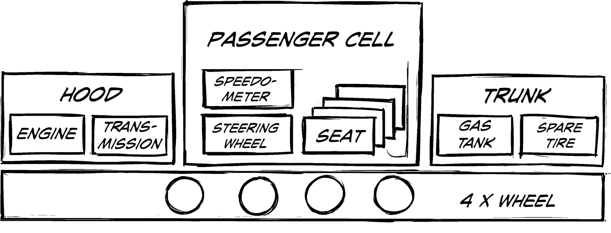
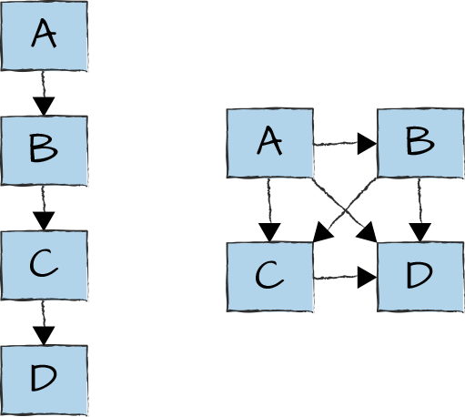

Architecture Without Lines Likely Isn’t One

The sketch above depicts the architecture of a car. All the important components are there, including their relationships: the engine is under the hood; passenger seats are appropriately located inside the passenger compartment, close to the steering wheel; wheels are assembled nicely at the bottom of the car in the chassis. This diagram appears to fulfill most definitions of architecture (except my favorite one because I am looking for decisions; see Chapter 8).
However, it does precious little to help you understand how a car functions: could you omit the gas tank because it’s far away from the engine, anyway? Are engine and transmission side by side under the hood by coincidence or do they have a special relationship? Does the car need exactly four wheels or will three also do? If you had to build the car in stages, what subset would make sense to assemble first? Would just the cabin with the seats be a good start? How can you distinguish a good car from a bad one? Which aspects are common in virtually all cars (e.g., the wheels being at the bottom) and which ones vary (Porsche 911, VW Beetle, or DeLorean owners would be quick to point out that their engine isn’t under the hood)?
The picture doesn’t really answer any of these questions. It depicts the location of the components, but it doesn’t convey their relationships or function in the overall system “car.” Even though the picture is factually correct and actually reasonably detailed, it doesn’t allow us to reason much about the system it is describing, especially its behavior. Coincidentally, it might also not be a good example of diagram-driven design (Chapter 22).
The critical element that’s missing in the picture are lines connecting the components. Without lines, it’s quite difficult to represent rich relationships. The line is so important that boxes, labels, and lines suffice to make up Kent Beck’s only half-joking Galactic Modeling Language.1 Without lines, there wouldn’t be much of a modeling language left. Also, as often stated, “the lines are more interesting than the boxes.” Where does stuff usually go wrong? In the integration between two well-tested pieces. Where do I need to look to achieve strong or loose coupling? Between the boxes. How do I tell a well-structured architecture from a Big Ball of Mud?2 By the lines.
The importance of lines is most easily understood from a simple example, illustrated in Figure 23-1.

The system on the left and the system on the right are made from the same components, A, B, C, and D. Would the two systems have different properties and behaviors? The system on the left has a neat, layered architecture, which provides clear dependencies and makes it easy to replace a component with a different one. It can also suffer from long latency because messages or commands have to travel through each component in sequence. Also, each component can become a single point of failure: if C fails, the chain is broken, and the system is unable to function.
The system on the right has almost the exact opposite properties: interdependencies are a bit messy, making it difficult to replace a component. However, the system provides shorter communication paths and is more resilient: if C fails, A can still talk to D.
If I see an architecture diagram without lines, I am inclined to reject it because it won’t convey the system’s behavior.
Now imagine that this diagram had no lines. You would never know whether the system is built like the one on the left or the one on the right, resulting in a rather meaningless architecture diagram. Therefore, if I see an architecture diagram without any connecting lines, I am skeptical as to whether it qualifies as a meaningful depiction of an architecture. Unfortunately, many diagrams fail this basic test.
Stating that the diagram of the car doesn’t show any relationships isn’t quite true. The picture does contain two primary relationships between components:
One box is enclosed by another.
Some boxes are close to one another, whereas others are farther apart.
Containment corresponds to real-world semantics in this drawing: seats are actually contained inside the passenger cell, and the hood (the engine compartment to be more precise) houses engine and transmission. Engine and transmission are also next to each other, giving them proximity, which underlines them sharing a strong relationship: one makes little sense without the other. But the proximity semantics in this picture are relatively weak: the gas tank and spare tire are also next to each other, but for the function of the car this doesn’t have any meaning. The vague correspondence of proximity in the diagram to real-life proximity has no relationship to function and thus renders an odd mix of a logical and physical representation.
I routinely challenge diagrams that limit relationships between components to containment. Such diagrams make it difficult to reason about the system, as seen in the car example we looked at earlier. Reasoning about the system is one of the main purposes of drawing an (architecture) diagram, so we need to do better.
Diagrams that are based only on containment and proximity generally could have been just as easily represented as an indented bullet list: subbullets are contained by outer bullets and bullets next to each other are in proximity. In our example, you would end up with a list like this (showing only a portion to avoid death by bullet points):
Hood
Engine
Transmission
Passenger cell
Speedometer
Steering wheel
Four seats
In this case, the picture doesn’t say the proverbial 1,000 words. The list and the picture are just different projections of the same tree structure. And people say intentional programming is difficult!3 You might like the picture better than the list, but you must be aware that both representations have the same richness, or poorness, of expression. The picture adds the size and shape of the boxes, which aren’t represented in the textual list, but the semantics of size and shape in our example are unclear: all components are rectangles, but the wheels are circles. It’s a crude approximation of reality, but for reasoning about the system it doesn’t add much.
When I was told for the first time that “UML sequence diagrams have weak semantics,” I was doubtful whether this rather academic statement had any relevance for me as a normal programmer. The short answer is: “yes, it does.” Prior to UML 2, sequence diagrams depicted only one possible sequence of interactions between objects, albeit allowing for concurrency. They couldn’t express the complete set of legal interaction sequences, such as loops (repeating interactions) or branches (either/or choices). Because loops and branches are some of the most fundamental control flow constructs, sequence diagrams’ weak semantics rendered them essentially useless as a specification. UML 2 improved the semantics but at the cost of much reduced readability.
Why worry so much about the semantics of a diagram? The purpose of design diagrams or engineering drawings is to give viewers an understanding of the system, particularly the system behavior. A drawing is a model, so it’s by definition wrong (Chapter 6). However, it can be useful; for example, by allowing the viewer to reason about the system. The visual elements, such as boxes and lines, must neatly map to concepts in the abstract model so that the viewer can build the model in their head. For the viewer to grasp the meaning of the drawing, the visual elements need semantics: semantics is the study of meaning.
Without lines, it is impossible to ascertain a system’s behavior. It’s like listing the ingredients for a meal without the recipe. Whether something tasty comes out primarily depends on the way it’s prepared: potatoes can turn into French fries, gratin, boiled potatoes, mashed potatoes, baked potatoes, fried potatoes, hash browns, and more. A meaningful architecture diagram, therefore, needs to depict the relationships between components and provide semantics for these relationships.
Electric circuit diagrams provide a canonical example of system behavior that depends heavily on connections between components. One of the most versatile elements in analog circuitry is the operational amplifier, or op-amp for short. Paired with a few resistors and a capacitor or two, this element can act as a comparator, amplifier, inverted amplifier, differentiator, filter, oscillator, wave generator, and much more. The system’s behavior, which varies widely, doesn’t depend on the list of elements, but solely on how they are connected. In the world of IT, a database can act as a cache, ledger, file storage, data store, content store, queue, configuration input, and much more. How the database is connected to its surrounding elements is fundamental, just like the op-amp.
If you feel that this is about as much as one could and should say about a contrived sketch of a car, rest assured that I get to see many architecture diagrams without any lines. These diagrams do depict proximity, simply because some boxes have to be next to each other, but whether any semantics are tied to this fact remains unclear. If you are lucky, proximity represents a form of “layering” from top to bottom, which in turn implies a dependency from things on “top” to things “further down.” In the worst case, proximity was defined by the order in which the author drew the boxes.
So-called “capability diagrams” or “functional architectures” are particularly likely to be devoid of lines. These diagrams tend to list (pun intended) capabilities that are needed to perform a certain business function. For example, to manage customer relationships you need customer channels, campaign management, a reporting dashboard, etc. The set of capabilities forms a “laundry list” of things that are needed, but we aren’t closer to architecture than listing windows, doors, roof for a house. I, therefore, prefer such input to be represented as textual lists so that this distinction becomes clear. Wrapping text in boxes doesn’t constitute architecture.
Speaking of lines, UML has a beautiful abundance of line styles: in a class diagram, classes (boxes) can be connected through association (a simple line), aggregation (with a hollow diamond on one end), composition (a solid diamond), or generalization (triangle). Navigability can be indicated by an open arrow, and a dependency by a dashed line. On top of this, multiplicities—for example, a truck having four to eight wheels but only one engine—can be added to the relationship lines. In fact, UML class diagrams allow so many kinds of relationships that Martin Fowler decided to split the discussion into two separate chapters inside his defining book UML Distilled.4 Interestingly, UML allows composition to be visually expressed through a line or as containment, that is, drawing one box inside the other.
With such a rich visual vocabulary, why invent your own? The challenge with UML notation is that you can appreciate the nuances of the relationship semantics between classes only if you have in fact read UML Distilled or the UML specification. That’s why such diagrams aren’t as useful when addressing a broad audience: the visual translation of solid diamond versus hollow diamond or solid line versus dotted line isn’t immediately intuitive. This is where containment works well: a box inside another is easily understood without having to add a legend.
As so often, the opposite of bad is also troublesome. I have seen diagrams in which elements have different shapes, sizes, colors, and border widths; connecting lines have solid arrows, open arrows, no arrows; are dotted, dashed, and of different color. These cases either result from sloppiness, in which case the visual variation has no meaning and is simply “noise,” or from a metamodel that’s so rich (or convoluted) that a diagram likely isn’t the right way to convey it. The rule I apply is that any visual variation in a diagram should have meaning—in other words, semantics. If it doesn’t, the variance should be eliminated to reduce visual noise, which only distracts the viewer and, worse yet, can cause the viewer to interpret this noise as semantics that were in fact never intended. Because you cannot look inside the viewer’s head, such misunderstandings or misinterpretations are difficult to detect. In short: making all boxes the same size won’t crimp your artistic talent, but it will make clear to the viewer that the model behind the diagram considers all boxes to have the same properties. It’ll also help draw attention to the lines.
The standard text on charting and diagramming is Tufte’s The Visual Display of Quantitative Information5 plus his subsequent books. Although the books initially focus on display of numeric information, later volumes cover broader aspects, including many examples that package complex concepts into diagrams that remain crisp and easy to grasp.
1 “Galactic Modeling Language,” Wikiwikiweb, https://oreil.ly/XT4lF.
2 Neal Harrison, Brian Foote, and Hans Rohnert, Pattern Languages of Program Design 4 (Boston: Addison-Wesley, 1999).
3 “Intentional Programming,” Wikiwikiweb, https://oreil.ly/5bGf-.
4 Martin Fowler, UML Distilled: A Brief Guide to the Standard Object Modeling Language, 3rd ed. (Boston: Addison-Wesley Professional, 2003).
5 Edward R. Tufte, The Visual Display of Quantitative Information (Cheshire, CT: Graphics Press, 2001).